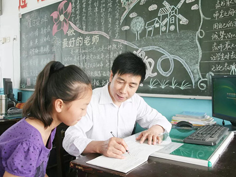
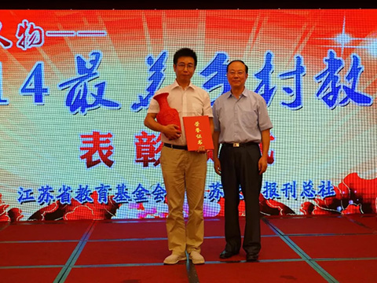
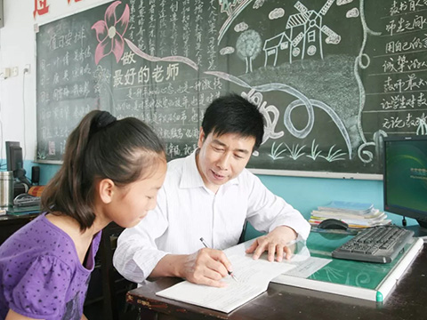
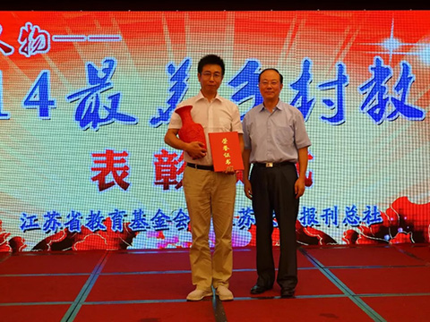
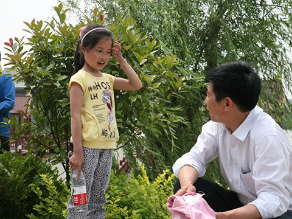
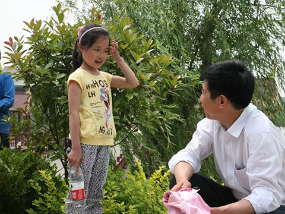

In the backward and unknown villages, everyone looks forward to the outside world, often
During the past ten years, we worked hard to improve the current situation, endured hardships and endured hardships.
Difficulties, never forget the beginning, always consistent.
 



 
Chen Jinhua has a character of standing up for ideas and acting on his own initiative. He takes advantage of his "job convenience" in charge of moral education in schools, promotes the establishment of a "teacher's mother's studio" and gradually "rules" for the care of Left-behind children. He slowly summarizes a set of "469 care work" that suits the characteristics of left-behind children and is popular with them. Law".

Chen Jinhua has a character of standing up for ideas and acting on his own initiative. He takes advantage of his "job convenience" in charge of moral education in schools, promotes the establishment of a "teacher's mother's studio" and gradually "rules" for the care of Left-behind children. He slowly summarizes a set of "469 care work" that suits the characteristics of left-behind children and is popular with them. Law". "Four Hearts": ideological, sincere guidance; emotional, affection; life, caring; learning, patient counseling. Chen Jinhua, 56, has been teaching in rural schools for 35 years and is the vice principal of Taizhou Experimental Primary School. Ten years ago, the five-foot-tall man, along with his colleagues, had an unusual identity: "eacher's mother.
Since then, Chen Jinhua and the left-behind children have formed an inseparable bond, like the treatment of biological children, meticulously care for the growth of these children; just like the treatment of career, he has devoted himself to promoting the work of caring for the left-behind children, and wrote down the ordinary and extraordinary teaching of a rural teacher with full of love.
Don't cry, baby
These children have different endowments, physical, mental and learning problems more or less, but there is a famous saying in Western education: "Children are not wrong." Although "ten fingers have their length", but "every finger is connected with the heart". At the theme class meeting, the teacher in charge said, "I'm your mother", which lit the lamp in Chen Jinhua's heart.
Under the advocacy and promotion of Chen Jinhua, in March 2008, 36 female teachers in the school paired with 58 left-behind and poor children, and gave their team a warm and loving name: Teacher's mother.At the beginning of 2009, Chen Jinhua, who had heard and witnessed that female teachers cared for the children of Left-behind children, applied voluntarily to become the first male teacher mother in the school.
Come home with your mother
From the beginning of saving Xiaofei, Chen Jinhua was convinced of two questions: one is that although the mother of a teacher loves her children as much as her own, her personal strength is limited, and the power of an example is also poor. The other is that the personal conditions of left-behind children and orphaned and poor children vary greatly, but the care work should be regular.
Six One: Teacher's mother eats with children at noon every day, makes heart-to-heart contact with paired children once a week, visits home once a week, calls parents once a month, takes children shopping once a semester, and arranges reunion once a school year. Teachers and mothers are required to make use of their spare time to improve their children's academic performance.Nine Special Activities: Teachers and mothers are organized to carry out 9 kinds of caring activities, such as Today I recognize my relatives, Dream of a small wish, the most beautiful fragrance of rice dumplings", "Mother and son enjoy reading together, Today's birthday, Special Children's Day, Hand in Hand to Nature, Community Visit, Teachers Love Run Mind.
Teacher's Mother Chen Jinhua

Looking for the Most Beautiful Country Teachers
He took out 50,000 yuan of savings to build the school, but was chased by his old father with a stick.
At that time, the idea of building a school house by Qubishi was unanimously opposed by the family. The hot-tempered father was chasing after his son who was "unfilial" with a shovel.
She inherited her father's 26-year dream of running a school and guarded 315 students'dream of going to school.
After 41 years of teaching, students have been looking for him for 25 years just to say "Thank you".
Yang Bing: Father of Fifty Orphans
There are 50 students in the love class. They either lost their parents, or left-behind children, or their families suffered from long-term illness. Fifty students may have their own misfortunes, but without exception, the special growth environment makes them need more kindness and love than ordinary children.
A touching moment
- After taking over the caring class, the daily living, medical treatment and study counseling of 50 children became the whole of Mr. Yang Bing and his wife. When the children first came to love class, the oldest was 10 years old, but the youngest was only 5 years old. Yang Bing teaches them how to brush their teeth, comb their hair and wash their clothes, so that they can learn to handle their internal affairs independently. Mr. Yang Bing and his wife, Mr. Wang Ying, also cut their hair and mended their pants.
- In the past six years, Mr. Yang has never slept before 1 a.m. and has to take care of the students who can't go home at weekends. Husband and wife take care of the students more than they take care of their children. To a certain extent, they have neglected their own children, their sons are in Grade One this year and their daughters are in Grade One this year. Guilt. "I understand the children in the love class. He is not only my father, but also the father of the children." When her daughter A Niu said this on the phone, Mr. Yang's voice was choking.
- Fortunately, Mr. Yang Bing's choice was supported by his wife, Mr. Wang Ying, as always. The two of them, a Chinese teacher and a math teacher, jointly became the "father" and "mother" of the class. So the sweet and sour of the love class began. Teacher Yang Bing's family love infusion makes children's lives different.
- After taking over the caring class, the daily living, medical treatment and study counseling of 50 children became the whole of Mr. Yang Bing and his wife. When the children first came to love class, the oldest was 10 years old, but the youngest was only 5 years old. Yang Bing teaches them how to brush their teeth, comb their hair and wash their clothes, so that they can learn to handle their internal affairs independently. Mr. Yang Bing and his wife, Mr. Wang Ying, also cut their hair and mended their pants.
- In the past six years, Mr. Yang has never slept before 1 a.m. and has to take care of the students who can't go home at weekends. Husband and wife take care of the students more than they take care of their children. To a certain extent, they have neglected their own children, their sons are in Grade One this year and their daughters are in Grade One this year. Guilt. "I understand the children in the love class. He is not only my father, but also the father of the children." When her daughter A Niu said this on the phone, Mr. Yang's voice was choking.
- Fortunately, Mr. Yang Bing's choice was supported by his wife, Mr. Wang Ying, as always. The two of them, a Chinese teacher and a math teacher, jointly became the "father" and "mother" of the class. So the sweet and sour of the love class began. Teacher Yang Bing's family love infusion makes children's lives different.
- After taking over the caring class, the daily living, medical treatment and study counseling of 50 children became the whole of Mr. Yang Bing and his wife. When the children first came to love class, the oldest was 10 years old, but the youngest was only 5 years old. Yang Bing teaches them how to brush their teeth, comb their hair and wash their clothes, so that they can learn to handle their internal affairs independently. Mr. Yang Bing and his wife, Mr. Wang Ying, also cut their hair and mended their pants.
- In the past six years, Mr. Yang has never slept before 1 a.m. and has to take care of the students who can't go home at weekends. Husband and wife take care of the students more than they take care of their children. To a certain extent, they have neglected their own children, their sons are in Grade One this year and their daughters are in Grade One this year. Guilt. "I understand the children in the love class. He is not only my father, but also the father of the children." When her daughter A Niu said this on the phone, Mr. Yang's voice was choking.
- Fortunately, Mr. Yang Bing's choice was supported by his wife, Mr. Wang Ying, as always. The two of them, a Chinese teacher and a math teacher, jointly became the "father" and "mother" of the class. So the sweet and sour of the love class began. Teacher Yang Bing's family love infusion makes children's lives different.
Team：杨鸿 陈深 张燕琼